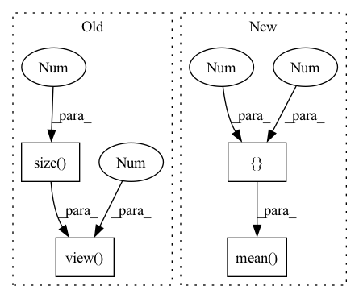

Pattern ID :38642

Before Change
a0 = input
w = self.weight
w1 = w - w.view(w.size(0), -1).mean(-1).view(w.size(0), 1, 1, 1)
w2 = w1 / w1.view(w1.size(0), -1).std(-1).view(w1.size(0), 1, 1, 1)
a1 = a0 - a0.view(a0.size(0), -1).mean(-1).view(a0.size(0), 1, 1, 1)
a2 = a1 / a1.view(a1.size(0), -1).std(-1).view(a1.size(0), 1, 1, 1)
a, b = self.a, self.b
X = w2.view(w.shape[0], a, b)
After Change
def forward(self, input):
a0 = input
w = self.weight
w1 = w - w.mean([1,2,3], keepdim=True)
w2 = w1 / w1.std([1,2,3], keepdim=True)
a1 = a0 - a0.mean([1,2,3], keepdim=True)
a2 = a1 / a1.std([1,2,3], keepdim=True)
a, b = self.a, self.b
In pattern: SUPERPATTERN
Frequency: 3
Non-data size: 4
Instances
Fragment ID: 110522006
Project Name: lmbxmu/rbnn
Commit Name: 6c9607902cf8cf520ec24c6d6fdc7ee2b3f9f9b5
Time: 2020-09-07
Author: 791411501@qq.com
File Name: cifar/modules/binarized_modules.py
M Class Name: BinarizeConv2d
N Class Name: BinarizeConv2d
M Method Name: forward(2)
N Method Name: forward(2)
M Parent Class: nn.Conv2d
N Parent Class: nn.Conv2d
M File Name: cifar/modules/binarized_modules.py
N File Name: cifar/modules/binarized_modules.py
M Start Line: 32
M End Line: 57
N Start Line: 32
N End Line: 37
'>
Before Change
w = self.weight
w1 = w - w.view(w.size(0), -1).mean(-1).view(w.size(0), 1, 1, 1)
w2 = w1 / w1.view(w1.size(0), -1).std(-1).view(w1.size(0), 1, 1, 1)
a1 = a0 - a0.view(a0.size(0), -1).mean(-1).view(a0.size(0), 1, 1, 1)
a2 = a1 / a1.view(a1.size(0), -1).std(-1).view(a1.size(0), 1, 1, 1)
a, b = self.a, self.b
X = w2.view(w.shape[0], a, b)
if self.epoch > -1 and self.epoch % args.rotation_update == 0:
After Change
w = self.weight
w1 = w - w.mean([1,2,3], keepdim=True)
w2 = w1 / w1.std([1,2,3], keepdim=True)
a1 = a0 - a0.mean([1,2,3], keepdim=True)
a2 = a1 / a1.std([1,2,3], keepdim=True)
a, b = self.a, self.b
X = w2.view(w.shape[0], a, b)
if self.epoch > -1 and self.epoch % args.rotation_update == 0:
'>
Fragment ID: 110522002
Project Name: lmbxmu/rbnn
Commit Name: 6c9607902cf8cf520ec24c6d6fdc7ee2b3f9f9b5
Time: 2020-09-07
Author: 791411501@qq.com
File Name: imagenet/modules/binarized_modules.py
M Class Name: BinarizeConv2d
N Class Name: BinarizeConv2d
M Method Name: forward(2)
N Method Name: forward(2)
M Parent Class: nn.Conv2d
N Parent Class: nn.Conv2d
M File Name: imagenet/modules/binarized_modules.py
N File Name: imagenet/modules/binarized_modules.py
M Start Line: 32
M End Line: 57
N Start Line: 32
N End Line: 37
'>
Before Change
def forward(self, x, w, fac1):
out = self.backbone(x)
if out.size(-1) != 1:
out = out.view(out.size(0), -1)
else:
out = out.squeeze()
if self.is_gbs:
return self.classifer(out, w, fac1)
After Change
def forward(self, x, w, fac1):
out = self.backbone(x)
if out.size(-1) != 1:
out = F.relu(out, inplace=True).mean([2, 3])
else:
out = out.squeeze()
if self.is_gbs:
return self.classifer(out, w, fac1)
'>
Fragment ID: 110521922
Project Name: sungbinlim/neuboots
Commit Name: 39a1c5bdf8f0760e5c974ce33fe7a10ce7ea9ee9
Time: 2020-05-26
Author: phelahab@gmail.com
File Name: models/gbsnet.py
M Class Name: GbsConvNet
N Class Name: GbsConvNet
M Method Name: forward(4)
N Method Name: forward(4)
M Parent Class: nn.Module
N Parent Class: nn.Module
M File Name: models/gbsnet.py
N File Name: models/gbsnet.py
M Start Line: 58
M End Line: 60
N Start Line: 59
N End Line: 61